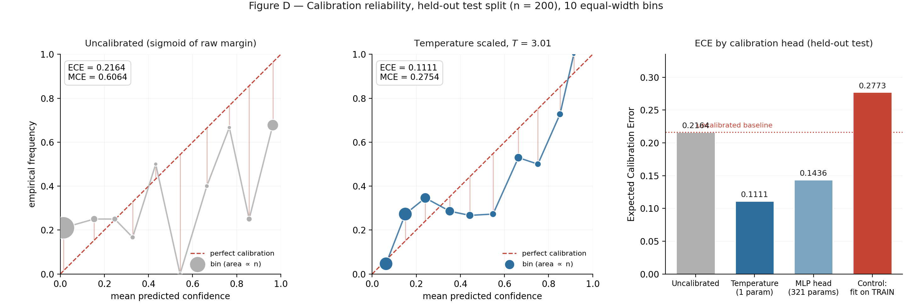
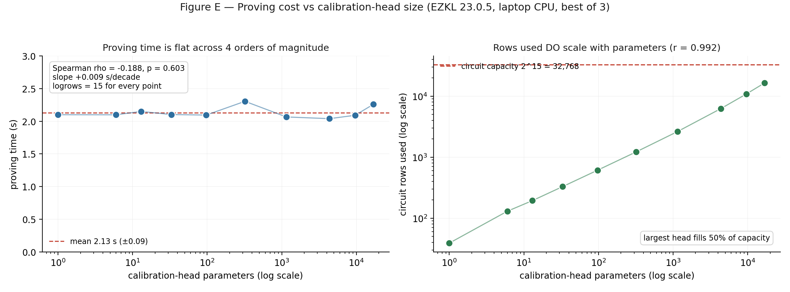

Every number below is produced by a script in the repository and regenerated into this page at build time. The protocol is 10 pinned seeds, always run in full, so a favourable subset cannot be reported selectively.
Temperature scaling reduces ECE by 53.0% on held-out data, in every seed. Accuracy is unchanged, as it must be: a monotone rescaling of the logit cannot move the decision boundary.
Calibration across 10 pinned seeds. Each row is a base model with temperature scaling applied on top, so the first two columns are the same model before and after. Learned T = 3.0121, with T > 1 in every seed — the base model required softening everywhere. Brier and accuracy are post-calibration; accuracy is unchanged by a monotone rescaling.
| Base model | Uncalibrated ECE | Calibrated ECE | Brier | Accuracy |
|---|---|---|---|---|
| XGBoost + temperature | 0.1853 ± 0.0235 | 0.0870 ± 0.0207 | 0.1758 ± 0.0107 | 0.7505 ± 0.0198 |
| Tabular NN + temperature | 0.2419 ± 0.0189 | 0.0874 ± 0.0226 | 0.1843 ± 0.0071 | 0.7280 ± 0.0187 |
| Ensemble + temperature | 0.1617 ± 0.0181 | 0.0834 ± 0.0154 | 0.1733 ± 0.0091 | 0.7410 ± 0.0164 |

Each was measured against the shipped baseline on the identical seed protocol and kept only if it earned its place. The failures are reported here at the same size as the successes.
Five ablated enhancements. Full tables and statistics in ABLATION.md.
| Enhancement | Verdict | Evidence |
|---|---|---|
| Conformal prediction | Adopted | Fits the circuit budget: logrows unchanged, +56 rows of 32,768, no measurable proving cost. |
| Counterfactual evidence | Adopted | 40 of 40 rejections resolved, 0 immutable violations, deterministic hash. |
| Deep tabular NN + ensemble | Null | 6W/4L on calibrated ECE (p = 0.6953), and it costs accuracy. |
| Deep-ensemble uncertainty | Negative | 2W/8L (p = 0.1309). The signal degrades calibration. |
| GNN collusion detection | Synthetic only | Recovers injected rings; never seen real collusion. |
Feeding the calibration head ensemble disagreement made calibration worse (2W/8L, p = 0.1309). But the same head shape fed a constant zero beat the baseline (8W/2L, p = 0.0371). So the architecture helps and the epistemic signal then cancels it — it is noise the head overfits on 200 calibration points. Without the control this would have read as “disagreement doesn’t help”.
Split conformal returns a set with a distribution-free coverage guarantee. Coverage tracks the target and sits 1–2 points below it at every level, which is within sampling noise at n = 10.
Coverage is reported with set size throughout, because coverage alone is trivially satisfiable: always return both labels and you have 100% coverage and no information.
| Target | Empirical coverage | Min over seeds | Seeds ≥ target | Avg set size |
|---|---|---|---|---|
| 0.80 | 0.7930 ± 0.0399 | 0.7300 | 5/10 | 1.102 |
| 0.90 | 0.8815 ± 0.0408 | 0.8200 | 4/10 | 1.357 |
| 0.95 | 0.9335 ± 0.0398 | 0.8550 | 4/10 | 1.570 |
The circuit-feasibility gate. It fits because both comparisons push through the monotone sigmoid into logit space and become comparisons against two constants, so the sigmoid never enters the circuit.
| Head | logrows | Rows used | Proving time | Proof size |
|---|---|---|---|---|
| Temperature only | 15 | 39 | 1.72 s | 17,525 B |
| Temperature + conformal | 15 | 95 | 1.66 s | 17,828 B |
The Brier arithmetic that is the substance of the mechanism is three orders of magnitude cheaper than proving that it ran.
Measured with forge test --gas-report on a local chain.
| Operation | Gas |
|---|---|
| Halo2Verifier deployment | 2,942,192 |
| verifyProof (real EZKL proof, on-chain) | 684,696 |
| attest with real proof (verify + store) | 887,376 |
| attest with mock verifier (storage only, median) | 232,854 |
| openDispute (median) | 134,608 |
| resolveDispute incl. slash + payout (median) | 97,390 |
| stake (median) | 45,443 |
| withdraw (median) | 29,616 |
| previewSlash (view) | 24,888 |
| BrierMath.slashAmount (pure, via wrapper) | 543 |
| BrierMath.squaredError (pure, via wrapper) | 507 |
At 887,376 gas an attestation costs about $79.86 on L1 at 30 gwei, against $0.13 on an L2 at 0.05 gwei (ETH at $3,000). At L1 prices the design is only coherent for decisions worth hundreds of dollars each, which excludes most consumer credit. The L1 figures are best read as an upper bound.

Statistics, controls and the negative results in full.